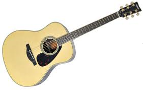

デザイン、種類について |
デザイン、種類について話します。デザイン、種類はたくさんあります。好みのギターを選んだり好きなギタリストと同じモデルを選ぶなど人それぞれ選び方が変わります。 好きなデザインから入ると続きやすいと思うので決まってる人は好みのギターを選んでもらえればいいと思います！ |
ギターの値段や基本の練習量はどのくらいか？ |
まず、値段について話したいと思います。ギターはどれもピンキリで作られた国や年代によって変わってきます。やはり、母国で作られたものが高価です。けれど日本で作られたものなので日本の四季に強くギターの状態が維持できます。また、年代で変わることもあります。なぜ年代で変わるかというと材料が木であるためすべてが同じではなくそれぞれ木にも形や特徴があるので変わります。 最低でも５万円ぐらいの日本製ですが、エレキギターにはもう少しそろえるものがあります。生音だと練習しててつまらないと思うので小さいアンプを買うことをお勧めします。そして、練習量に関しては、個人差がありますが１日３０分でも練習できれば上達できると思います。始めれ前や終わった後はストレッチすることがおすすめです。後は、好きな曲をイントロやサビだけでもいいので練習してコピーするだけでも変わってきます。 |
ギターについてアドバイス |
ストレッチはとても大切体には負担かかってるので少しでもほぐしてあげるといいと思います。また、好きな曲から始めると継続してできると思います。最後にギターはお金がかかってなかなか手が出せないと思いますが、バンド系や楽器を始めたいと思ってる人はギターを始めてみてはどうでしょうか？ギターにはいろいろと関連するものもあるので詳しく知ると面白いと思います。音を変えることもできるので谷しいと思います。 また、お店に行って実際に触れてみて試させてもらうこともお勧めします。参考画像のほうにURLを載せましたがネットで気に入ったものがある、ギター用品でほしいものがあったなどお店でなかったものを買う場合はサウンドハウスがお勧めだと思います。品ぞろいが良くて自分に合うものと会えるかもしれません。 |
ストラトキャスターまず、とてもオーソドックスなデザインはストラトキャスターというエレキギターです。自分がもし誰かにおすすめするとしたら最初に伝えたいギターです。 エレキギターの中では軽くて音は重くない感じでとてもいい響きをします。 おすすめポイント、いろんなジャンルの曲ができてギターを楽しく演奏できる例えば、自分の好きな曲になってしまいますが、椎名林檎さんの丸の内サティスティックという曲はおしゃれ雰囲気であり軽やかな合ってると思います。また、別の曲ではスピッツさんの曲はストラトキャスターの音にとてもあってると思います。 最初は、練習量を重ねてできるだけ多く触れることが大事なので肩に負担が少ない重さがいいと思います。 |
レスポールこのギターは、ロックやパンクに向いている音の響きが太く重い感じなのでストラトキャスターでロックの曲をやるよりレスポールで演奏したほうが自分的にはかっこいいと思います。 初心者の人で好みで決める人もいるのでとてもいいと思います。このギターに合ってる曲は、THE BLUE HEARTSさんの曲が合ってると思います。音が太く歪が効いた曲が合ってると思います。少し使いにくい点まず、座ってギターを弾く場合、形が丸いのでバランスをとるのが難しいと思います。また、ストラトキャスターより重いので肩に負担が、かかりやすく長時間練習は厳しいと思います。 なので、どのギターでも共通ですがストレッチをして肩をほぐすといいと思います。 |
その他のギター自分が知ってるほかのギターは少ないですが、少しでも紹介したいと思います。まず、ギターはエレキとアーコスティックと分けることができ、バンド系は基本エレキが多くて、アコスティックは、語りなどに使われていてどちらのギターもとてもいい音がします。 ７弦ギターやツインギターというギターがある特にツインギターは珍しくなかなか使ってる人を見ません。値段もかなり、かかります。 |
その他のギター２アコースティックギターエレキギターは電気信号でアンプから跡が出ていますが、アコースティックギターは真ん中に穴が開いてるのが画像から分かる通り、音が中で反響して音が聴こえます。 エレキギターと違って歪んだ音が出ませんがクリーントーン（そのままの音）がとっても魅力的なギターです。 |
ストラトキャスターに合う曲自分なりですが参考程度に初心者にやりやすい曲を載せます。
|
レスポールに合う曲
|
その他のギターその他のギターのツインギターは特殊なので紹介だけします。
また、アコースティックギターに合う曲も紹介します。 |
刺激を受ける楽器をやってない人でもいると思いますが、実際にライブで聴いてみると面白いと思います。 好きな曲をスマホやCDなどで聴くのもかっこいいですが 、実際に聴いてみるとさらにかっこよさがでて興味がわくと思います。 |
同じ趣味の人と話す周りの人で同じ楽器をやってる人がいたら話してみるとといいと思います。 張り合ったり、教えあうと早く上達できると思います。 |
ストラトキャスター参考画像